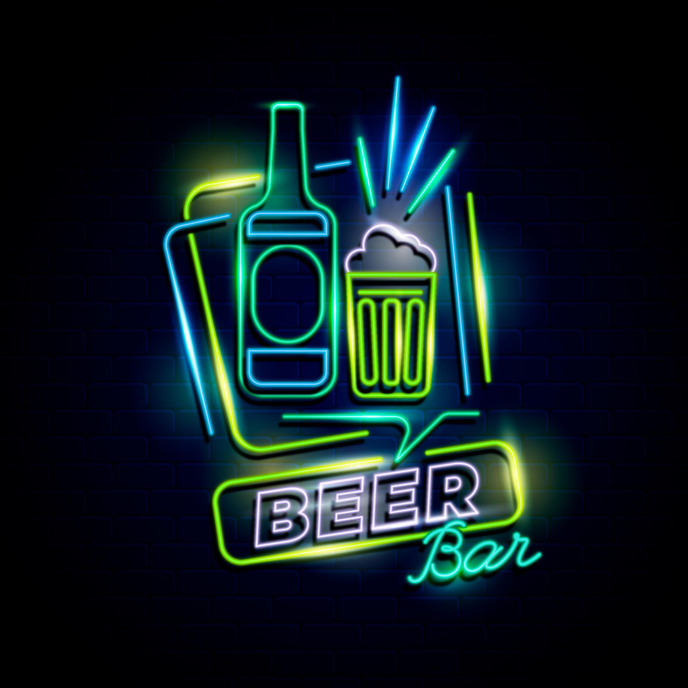
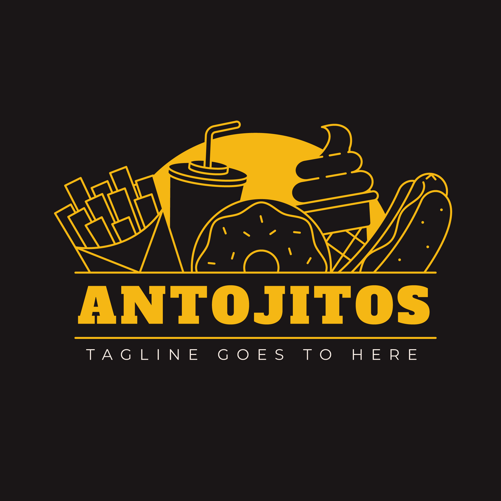

Lami é um bairro localizado no extremo-sul da cidade brasileira de Porto Alegre, capital do estado do Rio Grande do Sul. Foi criado pela Lei 6893 de 12 de setembro de 1991. Um dos bairros às margens do Guaíba, o Lami abriga a praia homônima.
Histórico
Até a década de 1970, o Lami era bastante isolado do restante da cidade, e tinha como característica ser um bairro povoado por pescadores. Nessa época, era possível aos seus habitantes tirar seu sustento do Guaíba, pois as suas águas não se apresentavam impróprias para estas atividades. O fato de não possuir vias de ligação com o centro da cidade dificultava tanto o seu uso para veraneio por parte dos demais portoalegrenses, como uma maior integração econômica entre os pescadores e os locais de venda de seus produtos. Essa situação só começou a mudar a partir dos anos 70, quando da construção da estrada de asfalto entre o Belém Novo e o Lami, assim como quando da criação da Reserva Biológica do Lami, uma das primeiras iniciativas ambientais implantadas por qualquer capital do Brasil. No entanto, ainda na década de 1950, aquela área fora inicialmente projetada para abrigar uma vila popular e, depois, pensada como um possível local para a sede recreativa dos funcionários municipais. Ambas as propostas foram abandonadas devido ao terreno alagadiço, que necessitava de um aterro prévio, tornando muito caros tais projetos.
Características
O bairro constitui-se em uma das poucas praias de de águas fluviais (atualmente limpas[5]) do Guaíba, tornando-se uma opção de lazer para a população durante o verão. Outro atrativo do bairro é a Reserva Biológica do Lami José Lutzenberger, onde espécies em risco de extinção, como o tuco-tuco e o bugio, podem ser encontradas.[6] O Lami também é um considerado um dos cenários do turismo rural em Porto Alegre, devido à presença de pequenas propriedades agrícolas em sua área. Essas vendem produtos coloniais, agroecológicos e artesanais, além de servirem como restaurantes de culinária caseira e regional.

Restaurantes
Onde Comer Bem!
Name restaurant 1

Name restaurant 2
Name restaurant 3
Bares
Noite e Diversão!
Name
Name
Name

Lancherias
Comida Rapida!
Name
Name
Name